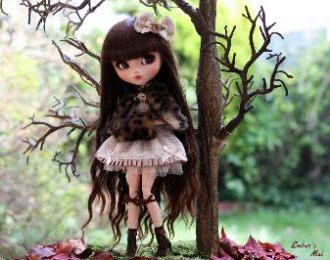
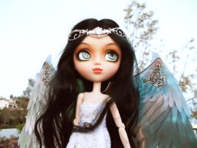
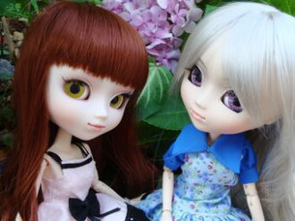
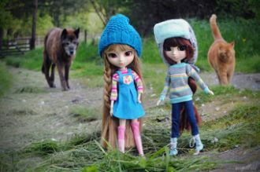
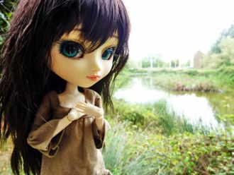
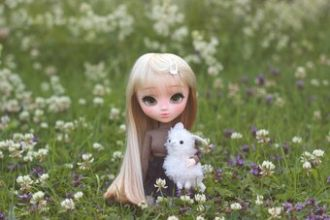
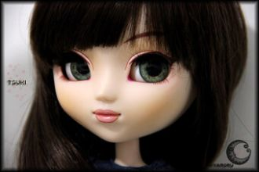
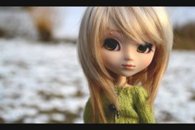

qīng qīng dì pěng zhe nǐ de liǎn
轻 轻 地 捧 着 你 的 脸
Holding your face gently
wéi nǐ bǎ yǎn lèi cā gān
为 你 把 眼 泪 擦 干

Алхлана зовлон дундаа улам татагданаЗалхалаа энэ үр дүн үргэлж давтагданаБи одоо хаашаа ч явахаа мэдэхгүй ээЭнэ дотор таашааж үлдэхээ хэнд ч хэлэхгүй

Haan..Mitthe paan di gilloriLattha suit da LahoriFatte maar di phillauri
Jugni mel mel keKood phaand keChakk chakaudde jaave
Шүрэтэй мүнгэн эмээлээ, эмээлээШэдыт саашань мориндоо, мориндооШэлдэг бэеынь залууда, залуудаЕрыт наашаа ёхортоо, ёхортоо
Талын баглаа сэсэгүүдыЭжын гарта барюулhай.Басаган хүнэй нэрыеЭжым намда бэлэглээ.
Басаган хүнэй нэрыеЭжым намда бэлэглээ.
Хүлэг хүлэг бороорооХүрөөд ерэхээ яагааш?Хүхюун амар мэндэеэХүргөөд ошохоо яагааш?
Арадай дуунууд сооhооАлтаргана дээжэнь.Арад зоноо нэгэдүүлhэнАлтаргана наадан hайхан.

Би буряад

ищма дуу
ищмахе

Сарны туяанд цэцэг урганаСалхины сэвшээнд үлгэр урсанаСаруул хар нүдийг чинь сананаСалалтгүй хамтдаа суугаасай
Чухам үнэнийг цөөн үгээр хэлдэгЧулуу шиг хатуу ч уяхан сэтгэлтэйЧинхүү хайрын эх эцсийн алинд чЧангалсан сэтгэлийн зүрх үнэнд хүрдэг

Ара газара ургагшэАса бүхэтэй АлтарганаАлиган дээрээ тэнжээhэнАба эжий хоёрни

Манантай өдөр байна харанхуй болно оо хө
Мандах нар нь гараад ирвэл тунгалаг болно оо хө
Нэрийг чинь би шивнэеСахиусан тэнгэр миньТэртээх уудмын цаанаасСонсогдох болов уу хэдэн үгс минь
Нууцалсан дугаар утсыг эгшүүлэнэНууц ноёнтон зүрхийг минь эмзэглүүлсэнОдоо бүх зүйл хэвийн гэж би хариулахгүй ээ

Цээ вангийн хошууныЦэцэн залангийн охинсон доо хөАрван найман настайдааАлиа Сэндэр нэртэй дээ хө
Тэр нэг тийм хүнНүд нь гүн, инээд нь хөнгөнТэр нэг тийм хүнНомер алт, бусад нь мөнгөнБи нэг тийм хүнБусдыг нь март, сэтгэлээ өнгө